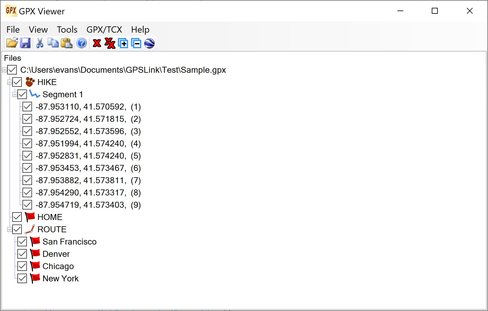

GPX Viewer Overview GPX Viewer Overview
GPX Viewer Overview GPX Viewer OverviewGPX Viewer allows you to examine and edit GPS Exchange Format (GPX) files through a graphical user interface. You can open multiple files, which will be shown in a tree view. You can expand the tree to see the tracks, waypoints, and routes, and further to see their sub-elements. You can send selected files to Google Earth to view the tracks, waypoints, and routes there. You can edit by using Cut, Copy, and Paste on the elements of the tree, and you can also edit the XML directly for each element.
Elements in the tree can be both checked and selected. Most operations operate on selected elements, but the checkboxes are used for sending to Google Earth.
Currently only GPX 1.1 is supported. Extensions, such as Garmin's TrackPointExtensionv2, that give heart rate and cadence are supported. You can also read Training Center Database (TCX) files, but they will be converted to GPX internally.
There is a menu with a number of GPX and TCX utilities, which is independent of the loaded files.
Acknowledgements are at the end of the page.
The interface has menus, a toolbar, and the tree view of the files. This is a screen shot of the GPX Viewer interface.

The tool bar icons are, in the order seen in the screen shot above:
Open Opens files. (Same as Open GPX / TCX on the File menu.)
Save Saves selected files. (Same as Save Selected Files on the File menu.)
Cut (Same as Cut on the Context menu.)
Copy (Same as Copy on the Context menu.)
Paste (Same as Paste on the Context menu.)
Help Shows the Overview. (Same as Overview on the Help menu.)
Remove Removes selected items from the tree. (Multiple items of different types may be selected.)
Remove All Removes all items from the tree.
Expand Expands the tree one level.
Collapse Collapses the tree one level.
KML Sends the checked file to Google Earth. (Same as Send to Google Earth on the File menu.)
Open GPX / TCX File
Brings up a file dialog to open GP or TCX files. You can select multiple files. They will then appear in the tree. The Open item in the toolbar also does this. TCX files will be converted to GPX.
Save Selected Files
Saves the selected files. You will prompted for the file names. The Save item in the toolbar also does this.
Open File Set
A saved file set is a text file with a list of file names and, by default, the extension .gpxfs. Blank lines and lines starting with # are ignored. This option opens a file set and adds the files to the tree. You can easily edit the text files outside of GpxViewer.
Save Checked as File Set
Saves the checked files as a file set.
Send to Google Earth
Converts the checked (not selected) files to KML and sends them to Google Earth. There is also a KML on the toolbar to do this. There will be a dialog with all the KML options so that you can change them first. See KML Options. Note that you can use this menu item to just save the KML file also. The setting to not send to Google Earth is in the dialog.
Exit
Exits the application.
Expand to Level
Expands the tree to the selected level.
Collapse All
Collapses the tree to show just the files.
Remove
Removes either the elected files or all files, depending on which sub-item is selected.
Check
Checks all files, no files, everything, or nothing, depending on which sub-item is selected.
Reset Tree from Model
Resets the tree from the internal information. This is usually done automatically when needed.
Synchronize
If elements in the tree are changed, synchronizes the references to them. For example, a track has a list of track segments. If you delete a segment, this list needs to reflect that change. This menu item synchronizes everything in the entire tree. This is usually done automatically when needed.
Save Checked Files as Startup Preferences
Saves the checked files so they will be loaded automatically the next time GPX VIewer starts.
Save Selected Files as Startup Preferences
Saves the selected files so they will be loaded automatically the next time GPX VIewer starts.
Find Files Near
This option allows you find all the files in a given directory that have tracks or waypoints that are within a specified distance of the specified latitude and longitude. It brings up this dialog:
You can copy a placemark in Google Earth and paste it here to get its latitude or longitude. You can also copy the latitude and longitude in the dialog into a placemark that can then be pasted into Google Earth to, say, mark the point that you used to select files after you send them to Google Earth. Copy Circle works the same way, but also shows a circle with the radius used.
Show Log
Output from some of the operations, especially on the GPX / TCX menu, is shown in a dialog with scrolled text. This is a modeless dialog, and retains everything entered, unless it is cleared. If the dialog is not visible, this makes it visible. However, visible does not mean it is on top. If it has become covered by other windows, you will have to find it. It becomes hidden (not visible) only when you click OK, but it still retains its contents. If no information has been sent yet, there will be no log.
The GPX / TCX Menu is a menu that provides a number of useful utility methods for manipulating GPX files and TCX files in general, not specific to this application. It is maintained as a separate C# class library. The same menu is used in multiple applications. For more information on the available commands and how to use them see https://kenevans.net/opensource/GPSUtils/Help/Overview.html.
Status
Brings up a dialog with information about the interface. This is primarily intended for debugging.
Overview
Brings up a window with this HTML file. It works as a rudimentary browser with links and Back and Forward buttons.
About
Gives information about this application including the version.
There is a context (right-click) menus on the tree area. Some of the possbile items may not be available, depending on the element clicked.
Add
Allows you to add a new item to the selected element. The choices in the submenu will be appropriate for the element selected.
Info
Brings up a dialog with information about the selected element.
Edit
Allows you to edit the XML for the selected element. This is a way to make more extensive changes than Cut, Copy, and Paste.
Remove Item
Remove the seleted item.
Remove Selected Items
Removes all selected items, not necessarily the one where you clicked.
Cut
Removes the selected item and puts it in the internal clipboard. (It is an internal clipboard, not the System clipboard.)
Copy
Copies the selected item into the internal clipboard. (It is an internal clipboard, not the System clipboard.)
Paste
Pastes the contents of the internal clipboard depending on the element clicked and the contents of the clipboard. If the clipboard contents are the same type of element as the one selected then the contents are added at the end of these elements. If the selected element is an appropriate parent of the type of the elements in the clipboard, then the contents are added at the end of the children of the same type as this element. For example, if there are waypoints in the clipboard, then if you select Paste on a waypoint, it pastes the contents to the end of these waypoints. If you select Paste on a file, then it pastes the contents to the end of the list of waypoints for this file, and if you select Paste on a route, then it pastes the contents to the end of the list of waypoints for this route.
Paste Special
Works like Paste but you can select Begining, Before, After, and End. Before and After refer to the element where you clicked, and they are not relevant if you clicked on an parent of the type of elements in the clipboard.
There are a number of KML options you can set before saving or sending to Google Earth. There is a dialog that appears when you select Send to Google Earth which allows you to set these options first and optionlly save them as defaults. The values shown in the image are the default values.

All of the items in this dialog have Tooltips that explain their use. The key points are:
The options you set will remain throughout the session. When GPX Viewer is restarted, the options will be the saved ones.
If you are installing from a download, just unzip the files into a directory somewhere convenient. Then run it from there. If you are installing from a build, copy all the files and directories from the bin/Release directory into a directory somewhere convenient.
To uninstall, just delete these files.
GPX Viewer is available from GitHub at https://github.com/KennethEvans/VS-GpxViewer.
It uses the NuGet packages GeoTimeZone, LinqToXsd, Newtonsoft.Json, ObjectListView.Official, SharpKml.Core, TimeZoneConverter, and TimeZoneNames as well as the class library Utils.dll from https://github.com/KennethEvans/VS-Utils.